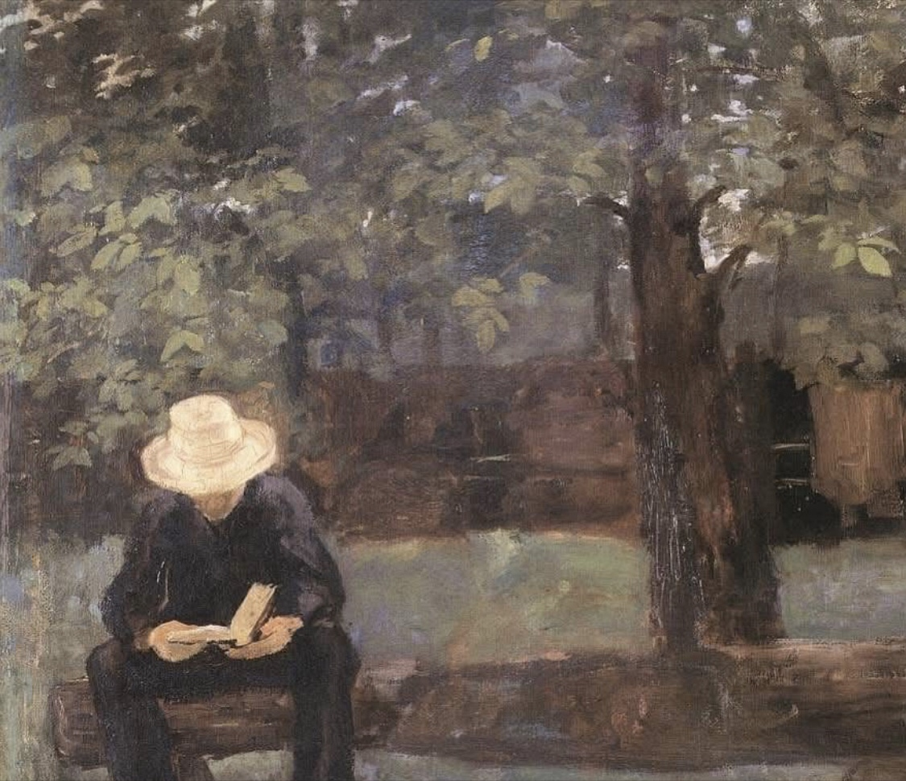
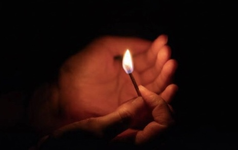
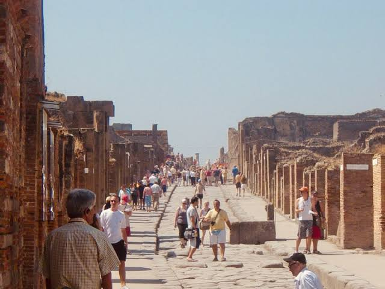

Luz percolada,
basta dizer que às vezes acontece,
no mundo do outro,
a nossa própria casa.
E essa sede de pranto,
que às vezes estremece,
dorme naqueles ombros,
naquela cruz.
14 de Dezembro, 2025
O balanço
O revoltoso campo,
úmido,
agora reverso
se me olho para trás,
para a grama alta, na tramóia
de quem me empurra mais longe,
para sempre.
A batida terra
que os pés não tocam,
o assoalho do mundo fugindo,
o ranger estridente
de um silêncio enorme.
Mais alegre
que alguém me desdobra
em assovios e repentes
e me canta músicas.
14 de Dezembro, 2025
Chuva
Não digas nada sobre a chuva,
em vez disso
deixa que a chuva não seja o caminho
ao atravessar as calhas aos borbotões,
deixa que a chuva chegue
em ser mero desfile
do que nunca houve
nem será para trás ruína de edifício.
A chuva escreve o seu sobrenome
nas costas da poeira
e deixa recostada nos muros
a dura sombra.
Nem proves o novo cálice
das fissuras
que abre na contramão
nem amargues o teu destino,
deixa que a chuva colha
as ínvias vias
e os atalhos não mensurados
do que não é teu.
Então ouvirás
um tremor na xícara em que bebes,
um pavio acender
a meia morada
do que deixaste atrás,
nas ruelas do teu caminho,
enquanto vigias a janela de cada momento,
apesar de tudo.
14 de Dezembro, 2025
Entre mim

Entre mim
e a circunstância,
a lua torna
a sua face branca
mil vezes
e brinca no céu.
Os astros permanecem,
mas nós
nos esquecemos de nós
e olhamos mais uma vez
para cima,
para o luminar
inconstante
e mais perto.
Enquanto vozes
arrefecem,
o dia a dia
torna a mudar
e sou eu quem toma
as mudanças
com as próprias mãos
e reconheço
o que é meu.
14 de Dezembro, 2025
Forma

Acendo um fósforo
para tomar a luz
na mão involuntária.
Noites nítidas não assombram
o tear da memória
e iluminam sombra por vez.
Um constelar de conchas
quebradas na areia
do imenso do oceano.
Acendo um fósforo
para melhor rever
os sinais abafados
de uma vida não entregue.
Um bruxuleio de água esquecida.
Não o incêndio
que devora as portas
não abertas deste mundo.
14 de Dezembro, 2025
O escavador

Ao longo dos anos, nunca cumpri tarefa.
As civilizações, a decadência das horas
foram formuladas num pano de sombras
cuja pena é sentir a verdade
nas mãos recolhidas à terra:
a haste de luz que esmoreceu
e o gume que espedaçou
para não ofender os olhos nem a dor.
Mas recolho de mim a própria esfera caída
do meu mundo mudo
e os meus lábios que fenderam à sede
de sobrevida.
14 de Dezembro, 2025
Primeiras Estórias - Ao ler Guimarães Rosa
A cachoeira colheu as nuvens
num cálice da terra
e distribuiu o sono-sonho
a quem o quisesse retribuir.
Estamos todos à mesa
de uma longa conversa
que suspendeu o cálice no chão,
nas torrentes de um abrigo.
13 de Dezembro, 2025
Estrela
Tenho pela estrela do território de um além
à beira do abismo mais profundo
um tão perfeito desinteresse!
Não lhe traçamos a distância com medida comum
e a névoa fria me devora como se propagou nos silêncios...
Mas talvez seja a expressão
do assombro em nossos membros,
do olhar que desilumina nas paisagens de luz.